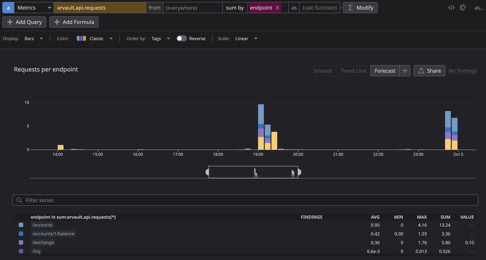
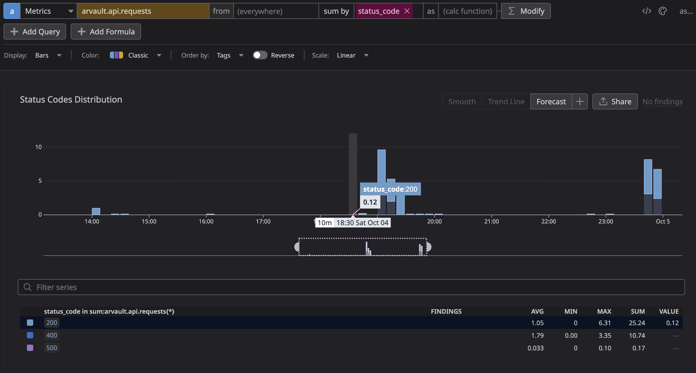
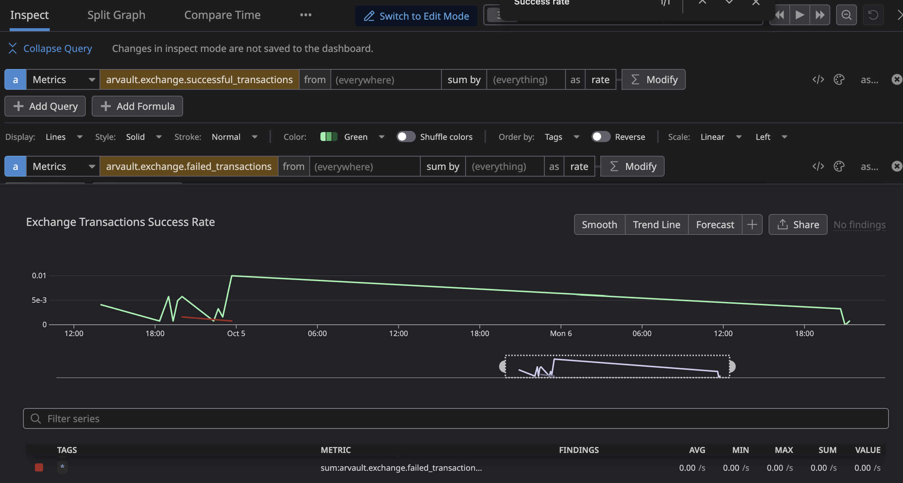
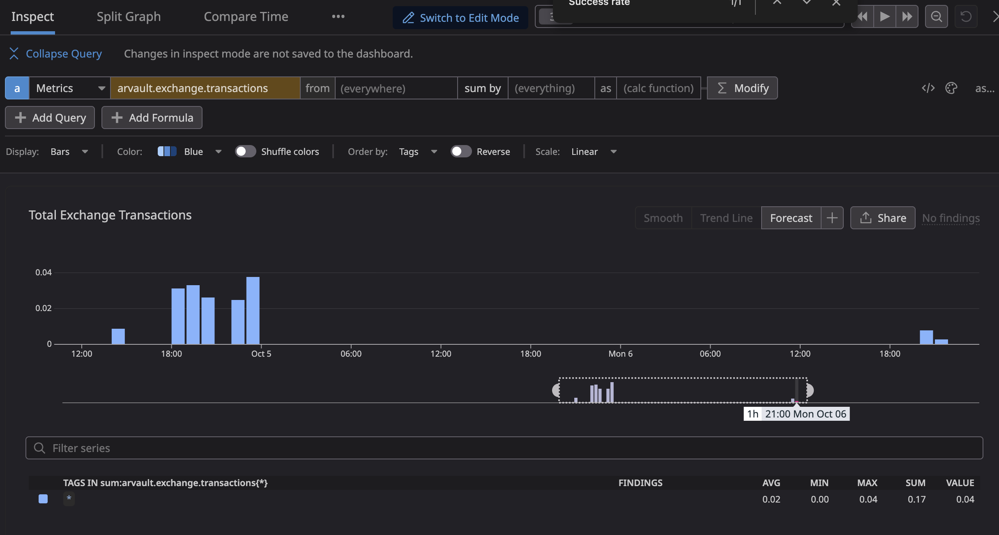
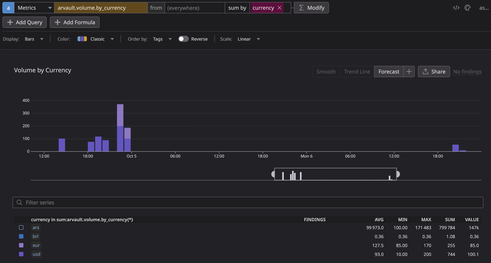
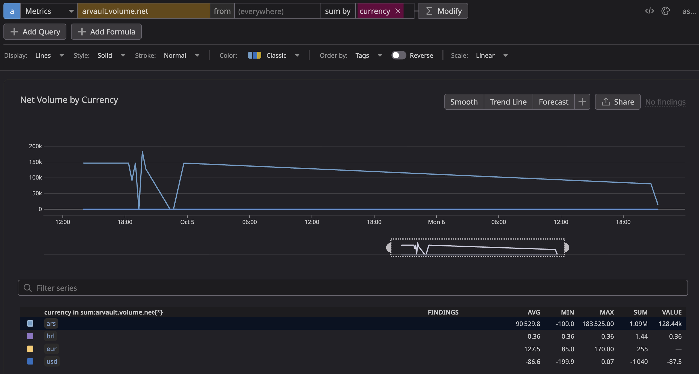
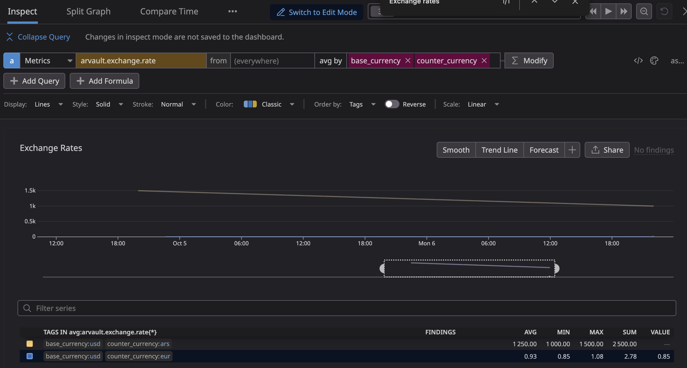
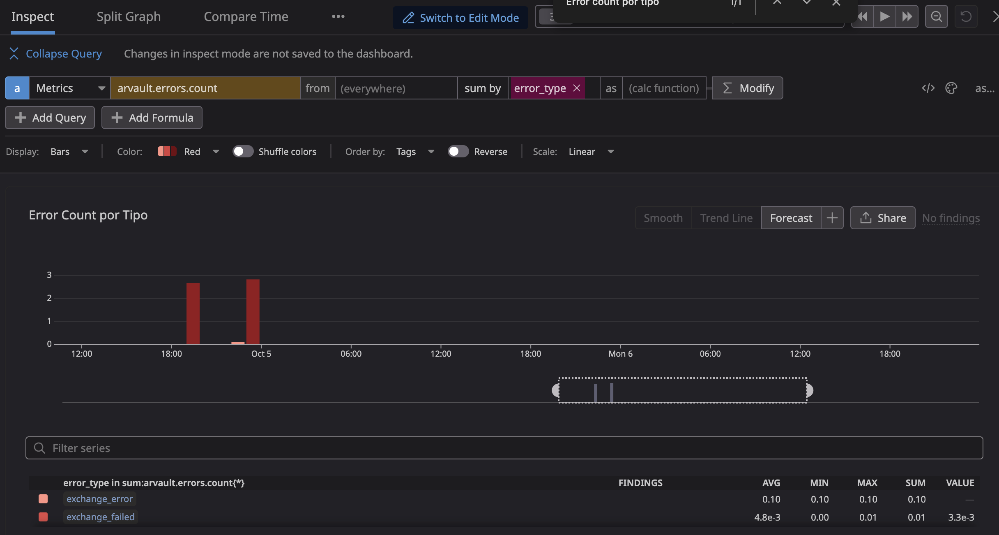
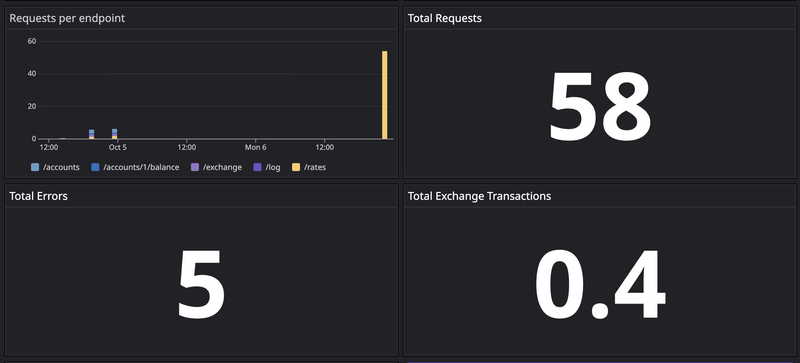

Índice
- 1. Introducción
- 2. Atributos de calidad (QA) claves identificados
- 3. Arquitectura base
- 3.1. Análisis de la influencia de decisiones de diseño en los QA's
- 3.2. Incorporación del stack de monitoreo cAdvisor + Artillery + StatsD + Graphite + Grafana
- 3.3. Impactos del modelo de persistencia elegido
- 3.4. Instancias únicas de cada servicio
- 3.5. Ausencia de un patrón de arquitectura interna
- 3.6. Diagrama C&C inicial.
- 3.7. Crítica a arquitectura base.
- 4. Metodología de pruebas
- 5. Resultados – Caso base
- 6. Propuestas de mejora
- 7. Trade-offs detectados.
- 8. Pedido Adicional (Volumen de transacciones por moneda)
- 9. Conclusiones
1. Introducción
arVault es una startup fintech que opera una billetera digital con un enfoque en ofrecer tasas de cambio competitivas para operaciones entre distintas monedas. En un contexto donde la confianza del usuario es fundamental, la empresa se enfrenta al desafío de mejorar su servicio de cambio de divisas tras recibir múltiples reclamos por problemas de rendimiento y disponibilidad.
El presente trabajo se enmarca en la necesidad de arVault de realizar una auditoría exhaustiva de su arquitectura actual para identificar oportunidades de mejora en los atributos de calidad del sistema. Este análisis resulta crucial para la empresa, ya que su capacidad de atraer nuevas inversiones depende directamente de la confiabilidad y desempeño de su plataforma.
Los objetivos principales de este trabajo práctico son:
- Analizar la arquitectura actual del sistema de cambio de divisas.
- Identificar los atributos de calidad críticos para el negocio.
- Evaluar el impacto de las decisiones de diseño en dichos atributos.
- Proponer e implementar mejoras basadas en tácticas arquitectónicas.
- Medir y comparar el rendimiento antes y después de las modificaciones.
El alcance del análisis abarca tanto aspectos técnicos como de negocio, considerando la infraestructura existente (Node.js, Express, Nginx, etc) y las herramientas de monitoreo implementadas (cAdvisor, StatsD, Graphite, Grafana). Se prestará especial atención a métricas clave como el volumen de operaciones por moneda y el neto de transacciones, tal como lo solicitó el fundador de arVault.
Este informe documenta nuestro proceso de análisis, las decisiones tomadas y los resultados obtenidos, con el fin de proporcionar recomendaciones fundamentadas que permitan a arVault mejorar la calidad de su servicio y recuperar la confianza de sus usuarios e inversores.
2. Atributos de calidad (QA) claves identificados
2.1. Disponibilidad
Al ser un servicio de exchange de monedas, asumimos que es un servicio que se utiliza durante todos los dias habiles de la semana en horario cambiario. Por lo tanto, es importante que el servicio se encuentre disponible durante esos horarios para no perder clientes.
Además, dado el contexto en el que queremos recuperar la confianza de los usuarios y remontar la reputación, el sistema debe ser altamente accesible para los usuarios y permitir realizar correctamente sus operaciones respetando tiempos razonables de respuesta.
2.2. Escalabilidad (Elasticidad)
La escalabilidad, y en particular la elasticidad, constituyen un atributo de calidad crítico para el servicio de intercambios de arVault. Esto se debe a que la infraestructura del sistema debe ser capaz de adaptarse dinámicamente a variaciones en la demanda de usuarios.
En el contexto del negocio, es esperable la aparición de picos significativos de demanda en momentos específicos (por ejemplo, en la apertura y cierre del horario cambiario), así como también períodos de baja o nula actividad. A ello se suma que, dado que el servicio busca captar rápidamente un gran volumen de nuevos usuarios, especialmente tras campañas de promoción destinadas a revertir percepciones negativas de experiencias pasadas, existe el riesgo de enfrentar aumentos inesperados de tráfico.
Si el sistema careciera de elasticidad, estos picos de operaciones de cambio de moneda podrían derivar en saturación de recursos, lo que a su vez ocasionaría demoras, rechazos de transacciones o caídas del servicio. Dichos incidentes afectarían de manera directa la reputación de la empresa, un aspecto considerado prioritario en función de los objetivos actuales y de las expectativas de los stakeholders.
2.3. Performance
El atributo de calidad Performance, y en particular el User-Perceived Performance, adquiere relevancia crítica en el servicio de intercambio de monedas de arVault, para sustentar esta afirmación nos basamos en el siguiente análisis del contexto y antecedentes brindados:
Tras el lanzamiento de la funcionalidad, se registraron reclamos de usuarios relacionados con demoras y fallas en la ejecución de operaciones de cambio, lo que ha derivado en reseñas negativas y pérdida de confianza en la plataforma. En un contexto donde la empresa necesita con urgencia atraer nuevas rondas de inversión, estas deficiencias de rendimiento representan un riesgo directo, ya que los potenciales inversores han condicionado su apoyo a la realización de mejoras en la calidad del servicio.
En una aplicación financiera, la percepción de agilidad y confiabilidad en la respuesta del sistema es esencial: tiempos de espera excesivos o transacciones fallidas afectan la experiencia de los usuarios y minan la credibilidad de la plataforma. Aunque el diferencial de arVault reside en ofrecer tasas de cambio más convenientes que la competencia, dicho valor se ve neutralizado si el servicio de intercambio no responde con la rapidez y estabilidad que los clientes esperan.
Por ello, la mejora del User-Perceived Performance se presenta como un paso imprescindible no solo para recuperar la confianza de los usuarios actuales, sino también para restaurar la reputación de la empresa ante el mercado y viabilizar la captación de nuevos inversores, garantizando así la continuidad y evolución del negocio.
2.4. Visibilidad
El valor de este atributo de calidad es más indirecto pero estratégico pues permite entender el comportamiento real del sistema, identificar cuellos de botella de performance, localizar errores en operaciones de cambio y detectar patrones de saturación que anticipen problemas de disponibilidad o escalabilidad. Es decir, la visibilidad no impacta de forma inmediata en la experiencia del usuario, pero habilita a los arquitectos y al equipo técnico a diagnosticar, mejorar y sostener los otros atributos de calidad prioritarios.
3. Arquitectura base
3.1. Análisis de la influencia de decisiones de diseño en los QA's
En la presente sección se explorarán las decisiones de diseño identificadas en la arquitectura base y su impacto sobre los atributos de calidad estudiados.
3.2. Incorporación del stack de monitoreo cAdvisor + Artillery + StatsD + Graphite + Grafana
El sistema actual presenta un stack de observabilidad para medir, almacenar y visualizar métricas en tiempo real. En concreto:
- cAdvisor: mide métricas de contenedores (CPU, memoria, etc.)
- Artillery: genera carga (testing de rendimiento)
- StatsD + Graphite: recolectan y almacenan métricas
- Grafana: visualiza las métricas
Esta decisión implicó agregar tres nuevos contenedores, configuraciones adicionales, puertos, conexiones en red internas de Docker y dependencias entre servicios, lo cual impactó de diferentes formas a distintos stakeholders.
3.2.1. Impactos identificados
- Carga cognitiva alta: Implicó que desarrolladores y arquitectos del sistema deban comprender cómo se conectan las herramientas, qué hace cada una y cómo interpretar los datos generados. Esto impacta la usabilidad interna (para el desarrollador), la manejabilidad y la simplicidad del sistema, que originalmente se componía solo de un backend y un proxy inverso (Nginx).
- Complejidad operativa: Más contenedores implican más puertos, configuraciones y logs extensos (en particular en el entorno local del trabajo práctico), lo cual aumenta el esfuerzo de debugging y de gestión general. Esto afecta negativamente la manejabilidad, dado que se incrementa la complejidad operativa y el tiempo requerido para mantener el sistema.
- Evaluación y visibilidad del comportamiento del sistema: Cuando el stack se encuentra correctamente configurado, las métricas permiten monitorear el rendimiento, detectar cuellos de botella y observar cómo interactúan los distintos componentes. Esto mejora la visibilidad del sistema y favorece la confiabilidad, ya que permite anticipar fallos o anomalías de comportamiento. No obstante, la dependencia entre múltiples herramientas introduce el riesgo de obtener una visibilidad incompleta si alguno de los servicios del stack (por ejemplo, Graphite o StatsD) deja de funcionar.
- Afectación a la disponibilidad: El aumento en la cantidad de servicios dependientes implica más puntos de falla. Si Graphite o StatsD se detienen, Grafana dejará de mostrar información actualizada. Además, el tiempo de despliegue y recuperación ante fallos se incrementa, afectando la disponibilidad de manera negativa, sobre todo en entornos locales.
- Apoyo a la testeabilidad y diagnóstico: El stack de monitoreo potencia la capacidad de análisis durante pruebas de rendimiento (por ejemplo, al utilizar Artillery y observar las métricas en Grafana). Esto facilita la identificación de comportamientos anómalos y la validación de la estabilidad del sistema, mejorando la testeabilidad. Sin embargo, la infraestructura adicional necesaria para habilitar el monitoreo también introduce complejidad en el entorno de prueba, lo que puede dificultar la reproducibilidad y el control de los experimentos.
- Seguridad y aislamiento: Añadir más servicios amplía la superficie de ataque, ya que cada contenedor es un proceso escuchando en distintos puertos internos. Esto impacta la seguridad operativa, aunque su efecto sea poco relevante en entornos locales de desarrollo.
- Impacto en la portabilidad del sistema: La containerización permite desplegar el stack completo en distintos entornos con relativa facilidad, lo cual favorece la portabilidad técnica. Sin embargo, la fuerte interdependencia entre servicios y las configuraciones específicas de red, puertos y volúmenes reducen la portabilidad práctica, dado que pequeñas diferencias en la infraestructura pueden afectar el funcionamiento o requerir ajustes manuales.
- Interoperabilidad y acoplamiento tecnológico: El uso de protocolos y herramientas estandarizadas (UDP, HTTP, Grafana, StatsD) favorece la interoperabilidad del sistema, tanto entre sus propios componentes como con futuras herramientas externas de monitoreo.
3.3. Impactos del modelo de persistencia elegido
El modelo de persistencia implementado en el sistema consiste en mantener en memoria el estado de los datos y, periódicamente, volcar dicho estado a archivos JSON almacenados localmente en la carpeta ~/state/~.
Esto implica que la persistencia está acoplada directamente a la instancia del servidor —es decir, se trata de un sistema *stateful*—, lo que conlleva una serie de consecuencias relevantes sobre diversos atributos de calidad.
- Acoplamiento con la instancia del servidor: Al vincular el estado con una única instancia, las sesiones de usuario y los datos persistentes no pueden compartirse entre instancias. Esto impide la escalabilidad horizontal, dado que cada réplica tendría su propio estado local no sincronizado. Implementar una gestión de estado distribuido requeriría una infraestructura adicional (por ejemplo, una base de datos externa o un servicio de caché compartido).
- Impacto en la disponibilidad y rendimiento percibido: La existencia de una única instancia con estado convierte al backend en un punto único de falla. Si el servidor se detiene, todas las sesiones activas se pierden y no pueden ser recuperadas por otra instancia. Esto afecta la disponibilidad y la experiencia del usuario, ya que aumenta la percepción de fallas y degradación del rendimiento.
- Problemas de concurrencia: Al utilizar el sistema de archivos local como medio de persistencia, se introducen condiciones de carrera durante operaciones de lectura y escritura concurrentes. El modelo de concurrencia de Node.js (basado en asincronía) no resulta suficiente para garantizar consistencia, dado que el file system no ofrece bloqueo ni sincronización de accesos concurrentes. Esto impacta negativamente la confiabilidad y la consistencia de datos.
- Ausencia de soporte transaccional: El modelo carece de transacciones, por lo que las operaciones no son atómicas ni recuperables ante fallos. En caso de interrupciones durante la escritura, el sistema puede quedar en estados inconsistentes o requerir restauraciones manuales. Esto degrada tanto la disponibilidad como la recuperabilidad.
- Pérdida de integridad de datos: La falta de atomicidad en las operaciones puede dejar al sistema en estados inválidos (por ejemplo, inconsistencias en saldos o cantidades totales). En consecuencia, la integridad del sistema se ve directamente comprometida.
- Incompatibilidad con balanceo de carga: Dado que el modelo de persistencia no soporta replicación, la existencia de un balanceador de carga (como Nginx) se vuelve una decisión cuestionable. No existen múltiples backends entre los cuales distribuir tráfico, y el balanceador introduce una capa de comunicación adicional que degrada el rendimiento sin aportar beneficios reales.
En conjunto, este modelo de persistencia afecta negativamente la disponibilidad, la escalabilidad, la integridad y la mantenibilidad, al tiempo que incrementa la complejidad operativa y el riesgo de errores durante la evolución del sistema.
3.4. Instancias únicas de cada servicio
El sistema fue diseñado de manera que cada servicio (API, proxy inverso Nginx, almacenamiento local, etc.) cuenta con una única instancia activa. Esta decisión genera múltiples puntos únicos de falla y limita severamente la capacidad del sistema para mantener su operación ante fallos parciales.
- Si cualquiera de estos servicios se detiene, el sistema completo se vuelve indisponible, afectando directamente la disponibilidad y la tolerancia a fallos.
- La ausencia de mecanismos automáticos de recuperación o reinicio (como health checks, watchdogs o políticas de restart configuradas en Docker) agrava el impacto de las fallas, ya que se requiere intervención manual para restablecer el servicio.
- Tampoco existen estrategias de replicación, balanceo ni redundancia, lo que hace imposible sostener niveles de servicio adecuados bajo carga o ante degradación de componentes.
Esta configuración puede ser suficiente para entornos de desarrollo o demostración, pero resulta inadecuada para entornos de producción, donde la disponibilidad, resiliencia y recuperabilidad son atributos esenciales.
3.5. Ausencia de un patrón de arquitectura interna
El sistema carece de un patrón de arquitectura claramente definido a nivel interno (por ejemplo, MVC, capas o microservicios), lo cual genera una estructura monolítica y fuertemente acoplada. Esta decisión afecta negativamente atributos clave del sistema relacionados con su evolución y mantenibilidad.
- Dificultad para modificar o extender funcionalidades: La ausencia de separación de responsabilidades y de interfaces desacopladas complica la incorporación de nuevas funcionalidades (extensibilidad) o la modificación segura de las existentes (modificabilidad).
- Incremento en la complejidad del código: La lógica de negocio, de presentación y de persistencia tienden a mezclarse, lo que eleva la complejidad cognitiva y el riesgo de introducir errores.
- Falta de testabilidad: Al no existir módulos claramente delimitados, las pruebas unitarias o de integración se vuelven difíciles de implementar, afectando la testeabilidad del sistema.
- Escasa capacidad de evolución: La arquitectura monolítica limita la posibilidad de migrar gradualmente a tecnologías más modernas o de reestructurar componentes de forma incremental.
En conjunto, esta ausencia de estructura arquitectónica limita la mantenibilidad, evolutividad, testeabilidad y extensibilidad, dificultando la gestión del ciclo de vida del software.
3.6. Diagrama C&C inicial.

3.7. Crítica a arquitectura base.
4. Metodología de pruebas
4.1. Recolección de datos
4.1.1. Graphit + Grafana
4.1.2. StatsD (métricas custom)
En la app se agregaron métricas propias con hot-shots (cliente StatsD/DogStatsD) usando el prefijo arvault.. Se emiten en dos puntos: (a) middleware HTTP para latencia y throughput, y (b) lógica de negocio del exchange para volumen y estado de las operaciones.
- HTTP (Performance)
arvault.api.response_time(timing, ms): latencia por request medida en el middleware. Útil para ver p50/p95/p99 y detectar degradaciones bajo carga.arvault.api.requests(counter): throughput de la API. Sirve para correlacionar picos de tráfico con cambios en latencia y calcular tasas (p. ej., error rate).
- Negocio (Visibilidad, Disponibilidad proxy)
arvault.exchange.transactions(counter): total de operaciones de intercambio. Base para segmentar por par de monedas y estado.arvault.exchange.successful_transactions(counter): operaciones exitosas; permite estimar disponibilidad efectiva percibida.arvault.exchange.failed_transactions(counter): operaciones fallidas; se usa con la anterior para ver el ratio de fallas.
arvault.exchange.base_amount/arvault.exchange.counter_amount(gauge): montos de la operación en moneda base y contraparte. Ayudan a entender volumen económico y detectar outliers.arvault.exchange.rate(gauge): tasa aplicada al momento del intercambio. Útil para auditar cambios de precio y drift respecto de configuraciones.arvault.volume.by_currency(gauge): volumen porcurrencyyoperation(buy/sell). Indica monedas demandadas y patrones de demanda.arvault.volume.operations_count(counter): cantidad de operaciones por dimensión de volumen; complementa el gauge para ver frecuencia sin importar el monto.arvault.volume.net(gauge): balance neto por moneda (positivo enbuy, negativo ensell). Sirve para monitorear exposición neta / liquidez.arvault.account.balance(gauge): balances reportados por cuenta/moneda. Útil para verificar disponibilidad de fondos y umbrales operativos.
- Errores (Confiabilidad)
arvault.errors.count(counter)
Las métricas incluyen tags según el caso (p. ej., endpoint, method, status_code, currency, operation, base_currency, counter_currency, success, y metadatos globales service, env). Estas señales se usan luego para contrastar escenarios de carga y fundamentar observaciones sobre Performance, Disponibilidad y Visibilidad.
4.1.3. DataDog (logs + métricas etiquetadas)
Se habilitó logging estructurado y el envío de métricas etiquetadas compatibles con DogStatsD.
- Logs JSON con
winston- Formato:
timestamp, captura deerrors({ stack: true }), ydefaultMeta(service,env,version). - Registros implementados:
logRequest: método, URL/path,status_code,response_time,user_agent, IP,request_id.logValidationError: errores de entrada (tipo, mensaje,endpoint,request_data).logSystemError: fallas internas (mensaje,stack, nombre de error,context).logExchangeTransaction: resultado de intercambio (ok/falla), IDs de cuentas, monedas, montos,exchange_rate, mensaje de error si aplica.logPerformance: duración de operaciones puntuales.logLifecycleEvent: eventos de ciclo de vida (ej.,startup).
- Formato:
- Métricas con tags (DogStatsD)
- Las métricas
arvault.*anteriores se envían con tags (p. ej.,endpoint,method,status_code,currency,operation,base_currency,counter_currency,success, además deservice,env,version). - Esto permite segmentar los indicadores de Performance y Visibilidad por dimensiones de negocio y técnicas.
- Las métricas
4.1.4. DataDog (dashboard)
Armamos un dashboard simple para entender las fallas criticas del servicio y ademas entender el dominio del negocio. La idea es cubrir tres frentes a la vez: Performance (qué tan rápido respondemos), Disponibilidad/Confiabilidad (qué tan seguido falla) y Visibilidad (qué parte del negocio está más activa).
- Requests per endpoint
Cuántas llamadas recibe cada ruta. Con esto vemos cuáles son las más usadas y dónde conviene poner foco de capacidad.

Figura 1: Requests por endpoint
- Status Codes Distribution
La mezcla de 200/4xx/5xx a lo largo del tiempo. Es nuestro termómetro de salud: muchos 5xx = algo se rompió del lado servidor; pico de 4xx = validaciones/UX para revisar.

Figura 2: Distribución de status codes
- Exchange – Success rate
Porcentaje de transacciones que salen bien vs. fallan. Cuando baja, impacta directo al negocio y hay que mirar lógica y dependencias.

Figura 3: Tasa de éxito de transacciones de exchange
- Exchange – Total transactions
Volumen bruto de operaciones. Útil para ver actividad, comparar días y estimar capacidad necesaria.

Figura 4: Total de transacciones de exchange
- Volume by currency
Cuánta actividad concentra cada moneda (USD, ARS, EUR, …). Ayuda con liquidez y prioridades: dónde hay más movimiento, ahí hay más riesgo/atención.

Figura 5: Volumen por moneda
- Net volume by currency
Compras menos ventas por moneda. Si el neto de USD es muy negativo, estamos vendiendo más de lo que compramos: ojo con la posición.

Figura 6: Volumen neto por moneda
- Exchange rates
Las tasas vigentes por par. Sirve para chequear precios, detectar volatilidad y cuidar márgenes.

Figura 7: Tasas de cambio por par
- Error count por tipo
Los errores agrupados por categoría (p. ej.,
validation_error,exchange_failed). Da pista rápida de dónde conviene atacar: UX/validaciones o lógica interna.
Figura 8: Conteo de errores por tipo
- KPIs de resumen
Un par de tarjetas con lo esencial: throughput, total de transacciones y total de errores. Es la vista “de un vistazo” para status diario y alertas.

Figura 9: KPIs de resumen (requests, transacciones, errores)
4.2. Generación de carga
5. Resultados – Caso base
5.1. Análisis del endpoint Rates
5.1.1. Prueba con carga baja
Se realiza una prueba de carga con los siguientes parámetros usando la herramienta Artillery:
phases:
- name: Ramp
duration: 30
arrivalRate: 1
rampTo: 5
- name: Plain
duration: 60
arrivalRate: 5
- Resultados observados

Para el escenario con una carga baja se observa el crecimiento sostenido y un posterior estado en el cual se mantiene constante la cantidad de request realizadas al servidor. Se observa que el máximo de la cantidad reportada de request son unas 50 y una media de 36.3 request por segundo.

También se logra observar que en un escenario con carga baja, el servidor consigue responder satisfactoriamente a todas las consultas realizadas sin presentar fallos.

Del lado del cliente se aprecian dos medidas en el tiempo de respuesta, el máximo registrado y la media del tiempo de respuesta. En la totalidad de la prueba de carga se la media se mantiene en un rango de 4-6 ms sin variar de manera brusca, a su vez, el máximo del tiempo de respuesta tiene una media 19.6 ms y se reduce drásticamente en el momento en el que el servidor alcanza su máxima cantidad de carga, mismo punto en el que alcanza un máximo, el cual corresponde a 28.2 ms.

Finalmente en un escenario de carga baja, el sistema se encuentra usando recursos casi constantes, las variaciones en el uso del CPU se encuentra en un rango de 0.5% a 0.6% y la memoria a su vez usa un porcentaje aún menor encontrándose en un rango de 0.071% a 0.074%.
En conclusión, analizando los gráficos y leyendo el resumen dado del comportamiento de la API, se realizaron 390 consultas al endpoint
ratesde las cuales todas fueron contestadas de manera satisfactoria.
5.1.2. Prueba con mayor carga
A continuación se realiza una prueba de estrés más intensa sobre la API, específicamente en el endpoint rates, con el objetivo de analizar el comportamiento del sistema bajo condiciones de alta demanda y cómo esto impacta en los atributos de calidad, tales como disponibilidad, rendimiento y uso de recursos.
Se incrementa significativamente la cantidad de solicitudes por segundo, simulando un escenario donde múltiples usuarios acceden simultáneamente al servicio. Los resultados permiten identificar el punto de saturación del sistema, posibles errores en las respuestas y variaciones en los tiempos de respuesta y consumo de recursos.
Para esto se recurre nuevamente a la herramienta Artillery, esta vez modificando la configuración anterior por la siguiente:
phases:
- name: Ramp
duration: 30
arrivalRate: 0
rampTo: 1000
- name: Plain
duration: 60
arrivalRate: 600
- Resultados observados

En un escenario de mayor carga se observa un crecimiento sostenido en la cantidad de request por segundos, una reducción y estabilización de la misma, en esta ocasión el gráfico no permite realizar conclusiones sobre el estado de la aplicación.

En cambio, en el gráfico del estado de las respuestas se observa un crecimiento en la cantidad de respuestas correctas del servidor, pero durante la etapa de llegada constante de la cantidad de request por segundo se observa la aparición de casos de error en las respuestas a los clientes, indicando claramente que el servidor alcanza un límite en la cantidad de clientes que puede atender.

Para el tiempo de respuestas se observa que una vez el servidor empieza a responder con códigos de error para los clientes, inicia un crecimiento acelerado en los máximos de tiempo de respuesta registrados, para el máximo, la media alcanza 1.46s y el máximo ahora alcanza casi los 10s para poder completar una consulta, mientras que para la media, se observa un crecimiento parecido. Esto indica claramente que el servidor presenta saturación de clientes y no permite responder adecuadamente a todos los clientes que intentan realizar una consulta sobre este endpoint.

A su vez, los resultados observados para los recursos utilizados, en primer lugar para la memoria, se observa un aumento en comparación al test anterior pero no representa un uso excesivo de la misma, haciendo uso de la memoria RAM en un rango de 0.188% a 0.194%. Por el contrario esta vez el CPU alcanza el máximo de su uso rápidamente, llegando a usar un 35.7%, esto antes de alcanzar el máximo en la cantidad de request realizados al servidor, sin embargo a partir de haber alcanzado el límite el uso del CPU desciende rápidamente y a pesar de anteriormente haber observado respuestas con errores en los clientes y no se observaría una relación con el uso de recursos excesivos, es decir, la aplicación no alcanza un límite en el uso de los recursos disponibles.
- Conclusión
En conclusión en un escenario de carga alta el servidor no es capaz de atender a todos los clientes de manera eficiente y afectando completamente la disponibilidad del servicio, el cual es un atributo de calidad clave y uno de los que se desea mejorar para incrementar la percepción positiva de la aplicación por parte de los clientes.
5.1.3. Resumen de métricas de Artillery
Para la prueba de carga baja (salidarates1.txt):
- Total de solicitudes: 390
- Todas respondidas con código 200 (sin fallos)
- Tiempo de respuesta medio: 1.1 ms, mediana: 1 ms, p95: 2 ms, p99: 2 ms
Para la prueba de carga alta (salidarates2.txt):
- Total de solicitudes: 45000
- Respuestas exitosas: 35944 (con 9056 errores ECONNRESET)
- Tiempo de respuesta medio: 321.2 ms, mediana: 16 ms, p95: 2836.2 ms, p99: 4492.8 ms
6. Propuestas de mejora
6.1. Implementacion de Valkey como persistencia
6.1.1. Tactica aplicada
La implementación utiliza Valkey como almacén de datos centralizado, reemplazando la persistencia en archivos JSON. Los datos se almacenan como claves en Redis:
accounts: Almacena la lista de cuentas de usuario en formato JSON.rates: Contiene las tasas de cambio entre monedas.log: Registra el historial de transacciones realizadas.
El módulo valkey.js proporciona funciones asíncronas para inicializar la conexión (init()), obtener datos (getAccounts(), getRates(), getLog()) y actualizarlos (setAccounts(), setRates(), setLog()). Estas funciones serializan/deserializan los datos a JSON para almacenarlos como strings en Redis.
En exchange.js, se importa y utiliza este módulo para todas las operaciones de persistencia, reemplazando las lecturas/escrituras directas a archivos. La inicialización se realiza al inicio de la aplicación con await valkeyInit().
6.1.2. Configuracion
Se agregó un servicio valkey en el docker-compose.yml utilizando la imagen valkey/valkey:8.1.4-alpine, expuesto en el puerto 6379. La aplicación se conecta mediante la variable de entorno VALKEY_URL=redis://valkey:6379.
6.1.3. Beneficios
Al centralizar el estado en Valkey, múltiples instancias de la API pueden compartir el mismo almacén de datos. Esto elimina la dependencia de estado local en memoria o archivos, permitiendo:
- Escalado horizontal sin pérdida de consistencia.
- Persistencia real de los datos, sobreviviente a reinicios de contenedores.
- Operaciones atómicas en Redis para transacciones financieras.
Esta táctica mejora significativamente la Disponibilidad y Escalabilidad, mitigando los puntos únicos de falla relacionados con la persistencia local.

6.2. Implementacion de PostgreSQL como persistencia
6.2.1. Tactica aplicada
La implementación utiliza PostgreSQL como almacén de datos relacional, reemplazando la persistencia en archivos JSON y Valkey. Las tablas creadas son:
accounts: Almacena las cuentas de usuario con campos como id, currency, balance, createdat, updatedat, deleted.exchange_rates: Contiene las tasas de cambio entre monedas con basecurrency, countercurrency, rate, updatedat.transactions: Registra el historial de transacciones realizadas, con soporte para atomicidad en operaciones de intercambio.
El módulo databaseAdapter.js proporciona funciones para conectarse a PostgreSQL usando el paquete pg, manejando conexiones y transacciones. Los modelos en models/ (Account, ExchangeRate, Transaction) manejan las operaciones CRUD con soporte para transacciones ACID.
En exchange.js, se utilizan estos modelos para todas las operaciones financieras, incluyendo transacciones atómicas para intercambios que requieren consistencia (ej. actualizar balances y registrar transacción en una sola operación).
6.2.2. Configuracion
Se agregó un servicio postgres en el docker-compose.yml utilizando la imagen postgres:15-alpine, con inicialización de la base de datos mediante el script 01-init.sql que crea las tablas, índices y datos iniciales.
Se configuraron tres instancias de la API (api1, api2, api3) conectadas a PostgreSQL, permitiendo escalado horizontal sin pérdida de estado.
Se actualizó nginx_reverse_proxy.conf para balancear carga entre las tres instancias de API utilizando un bloque upstream.
6.2.3. Beneficios
Al centralizar el estado en PostgreSQL con transacciones ACID, múltiples instancias pueden compartir el mismo almacén de datos de forma consistente y atómica. Esto elimina dependencias de estado local, permite escalado horizontal sin pérdida de consistencia, y asegura atomicidad en operaciones financieras críticas, mejorando la integridad de datos.
Esta táctica mejora significativamente la Disponibilidad (reduciendo puntos únicos de falla en persistencia), Escalabilidad (permitiendo más nodos con estado compartido), y Performance (con transacciones eficientes, concurrencia controlada y consultas optimizadas con índices).

6.3. Comparacion de estados de requests

Figura 10: Estado de requests en la arquitectura base
En la arquitectura base, se observa una alta tasa de errores debido a la sobrecarga de la única instancia de la API y problemas de concurrencia en el acceso a archivos JSON locales, lo que resulta en fallos de conexión y respuestas erróneas bajo carga elevada.

Figura 11: Estado de requests con la propuesta de mejora (PostgreSQL y balanceo de carga)
Con la propuesta de mejora que incluye balanceo de carga entre tres nodos y PostgreSQL como persistencia, la tasa de errores se reduce significativamente. El balanceo de carga distribuye la carga uniformemente entre los nodos, evitando la saturación de un solo punto, mientras que PostgreSQL maneja mejor la concurrencia mediante transacciones ACID y acceso controlado a la base de datos, minimizando errores por conflictos de acceso a datos y mejorando la estabilidad general del sistema.